旁白
彼海姆的欧贝克 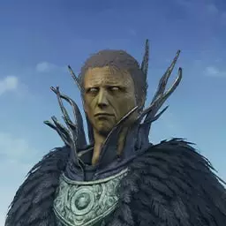
大沼的柯弭库斯
卡利姆的伊莉娜 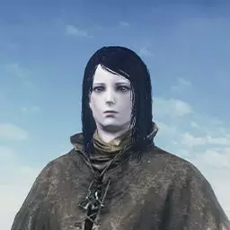
卡露拉
祭祀场侍女 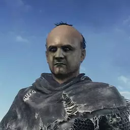
不死聚落的葛雷瑞特
隆道尔的尤莉雅 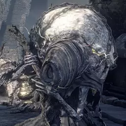
隆道尔的尤艾尔
不屈不挠的帕奇 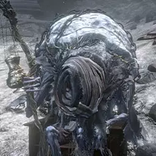
背盖子的老妪
库尔兰的鲁道斯 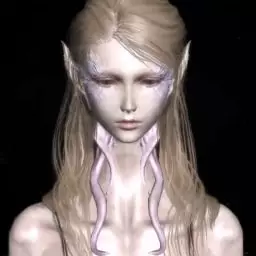
骑士团团长幽儿希卡
主祭艾玛
铁匠安德烈
防火女 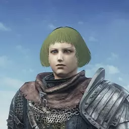
亚斯特拉的安里
卡塔利纳杰克巴尔多
脱逃者霍克伍德
无名指的李奥纳德
卡利姆的伊果 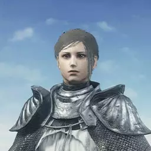
薄暮之国的希里丝
圣骑士佛多林克 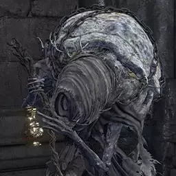
隆道尔的老妇
巨人奴隶 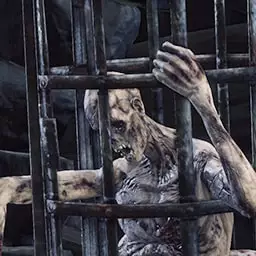
笼中狂人
奴隶骑士盖尔
酣梦禁忌者 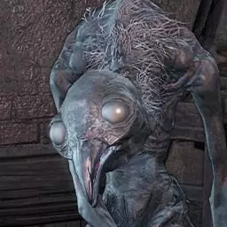
鸦村的禁忌者
芙莉德修女 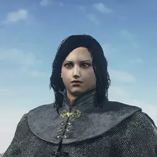
骑士维赫勒 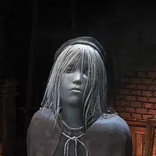
画家
费莲诺尔的骑士希拉
白脸虫
环印城的游魂 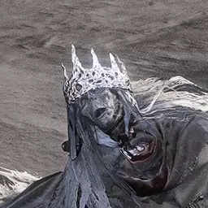
小人王 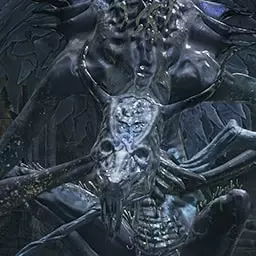
妖王欧斯罗艾斯
洛斯里克王子 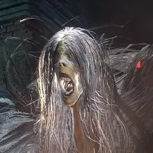
艾雷德尔神父
阿尔戈法官
鸟巢女孩
白树女 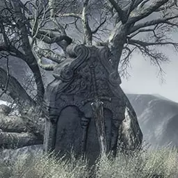
墓志铭
其他